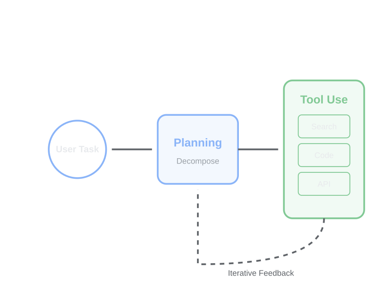
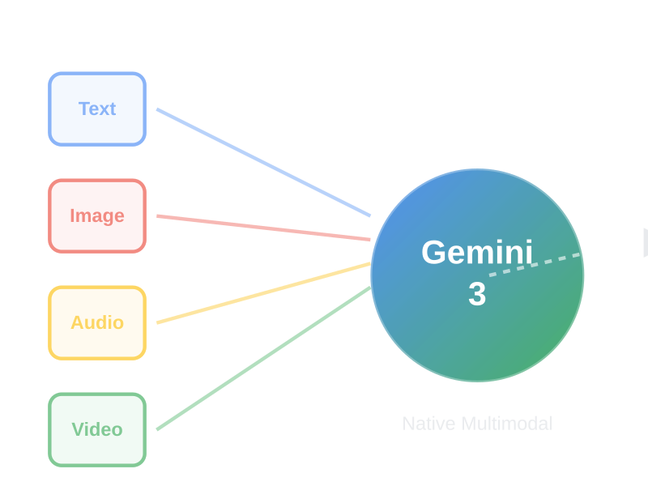

Gemini 3.1 什么时候发布？
Gemini 3.1 Pro 于 2026年2月19日 正式发布，是 Gemini 3 系列的重大升级版本。目前已通过 Google AI Studio、Vertex AI 向全球开发者和企业用户开放，Gemini App 也同步更新。
Google DeepMind 团队的最新杰作，专为复杂推理与多模态交互而生。
引入类似 System 2 的慢思考模式，在处理复杂数学、编程及逻辑问题时，准确率大幅提升。
不仅是文本。Gemini 3 从底层开始即针对图像、音频、视频和代码进行联合训练，理解能力无缝衔接。
支持 100万+ Token 的上下文窗口，轻松处理整本书籍、大型代码库或长达数小时的视频内容。
满足不同场景的性能与效率需求
最强通用模型，在 LMArena 达到 1500 Elo，荣登榜首。
速度与成本的完美平衡，响应极快。
Gemini 3 不仅仅是一个聊天机器人。它具备了更强的规划（Planning）和工具使用（Tool Use）能力。
在企业级应用中，Gemini 3 可以自主分解复杂任务，调用外部 API，甚至执行多步操作来完成如“预定差旅并生成报销单”等端到端的工作流。

得益于原生多模态架构，Gemini 3 Pro Image Preview 版本展示了惊人的视觉理解力。
它不仅能描述图片，还能理解空间关系，甚至通过观察 UI 界面截图来编写对应的前端代码，极大地加速了开发原型设计的流程。

Gemini 3 正在重塑各行各业的工作方式
辅助医生分析 X 光片与 CT 影像，快速查阅海量医学文献，提供辅助诊断建议，大幅缩短诊断时间。
Deep Think 模式可深入分析财报数据，预测市场趋势，并自动生成风险评估报告，助力精准投资决策。
从需求文档直接生成代码框架，或通过截图修复 UI Bug。Gemini 3 是全能的结对编程伙伴。
只需几行代码，即可集成最先进的 AI 能力
import google.generativeai as genai
model = genai.GenerativeModel('gemini-3.1-pro')
# 开启 Deep Think 深度推理模式
response = model.generate_content(
"分析这份复杂的财务报表并预测下季度趋势...",
generation_config={"thinking_mode": "deep_think"}
)
print(response.text)
Gemini 3.1 API 新增函数调用与 Google Search/Maps 组合功能，支持上下文循环和 Maps grounding。JSON Mode、函数调用及上下文缓存等丰富功能持续提供。
查看 API 文档数据见证实力，Gemini 3.1 在多项权威测试中刷新记录，荣登 LMArena 榜首。
| 基准测试 (Benchmark) | Gemini 3.1 Pro | Gemini 3 Pro | GPT-4o / Other |
|---|---|---|---|
| LMArena Elo (综合排名) | 1500 (#1) | 1486 | 1300~1400 |
| GPQA Diamond (研究生级问答) | 93.8% | 91.9% | -- |
| Humanity's Last Exam (Deep Think模式) | 41.0% | ~40% | < 37% |
| ComplexFuncBench Audio (语音交互) | 90.8% | -- | -- |
| SWE-bench Verified (代码修复) | 76.2% | -- | -- |
*注：数据基于 Google 2026年发布的官方技术报告及第三方测试结果。LMArena 数据更新至2026年2月。
来自行业先行者的真实反馈
"Gemini 3 的多模态理解能力彻底改变了我们的视频编辑工作流，它能精准理解视频内容并生成脚本。"
"Deep Think 模式在处理复杂的供应链优化问题时展现出了惊人的逻辑能力，准确率远超预期。"
"作为开发者，我最喜欢它的 API 响应速度和结构化输出能力，集成过程非常顺滑。"
Gemini 3.1 Pro 于 2026年2月19日 正式发布，是 Gemini 3 系列的重大升级版本。目前已通过 Google AI Studio、Vertex AI 向全球开发者和企业用户开放，Gemini App 也同步更新。
Gemini 3.1 在多个方面实现了显著提升：LMArena 达到 1500 Elo 荣登榜首，GPQA Diamond 从 91.9% 提升至 93.8%，Deep Think 模式全面升级，专为科学、研究和工程挑战设计。此外，Gemini 3.1 Flash Live 带来了更自然的语音交互体验。
普通用户可以通过 Google 的 Gemini App 体验（Gemini 3.1 Flash 为默认模型，Advanced 订阅用户可使用 Pro 模型）。开发者可以通过 Google AI Studio 获取 API Key 进行调用，支持 Python、JavaScript 等多种 SDK。
Gemini 3.1 Flash 提供极具竞争力的低成本选项，适合大规模部署。Pro 版本虽然成本较高，但提供了最顶级的推理能力。Google AI Studio 为开发者提供了一定的免费每日配额，Vertex AI 提供企业级定价。
Google 遵循严格的企业级数据隐私标准。通过付费 API 或企业版提交的数据默认不会用于训练未来的模型，确保您的商业机密和用户隐私得到充分保护。
Gemini 3.1 拥有卓越的多语言能力，支持全球 100 多种语言的流利对话与翻译，包括中文、英语、日语、韩语、西班牙语等，并能理解特定语言的文化细微差别。